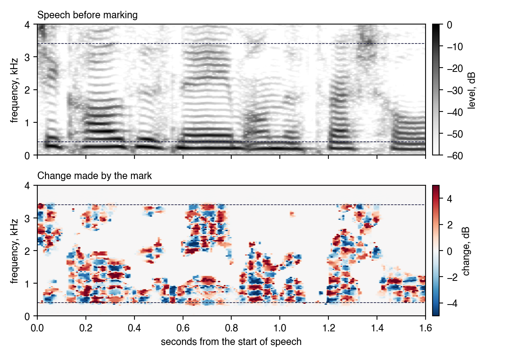
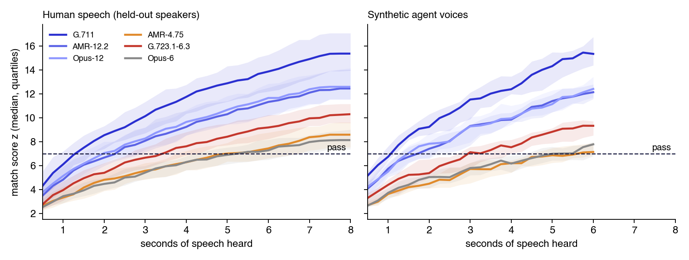
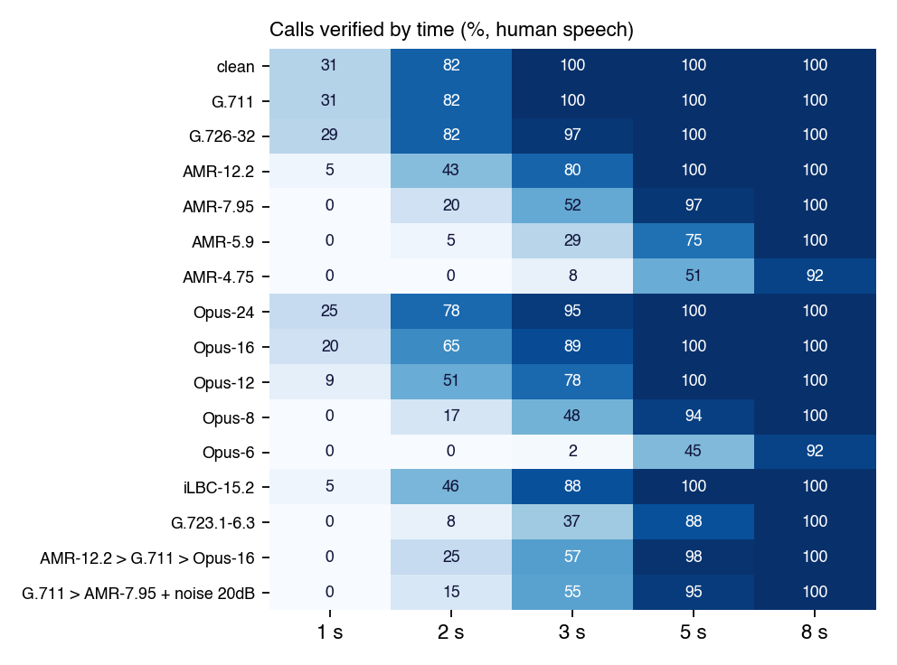
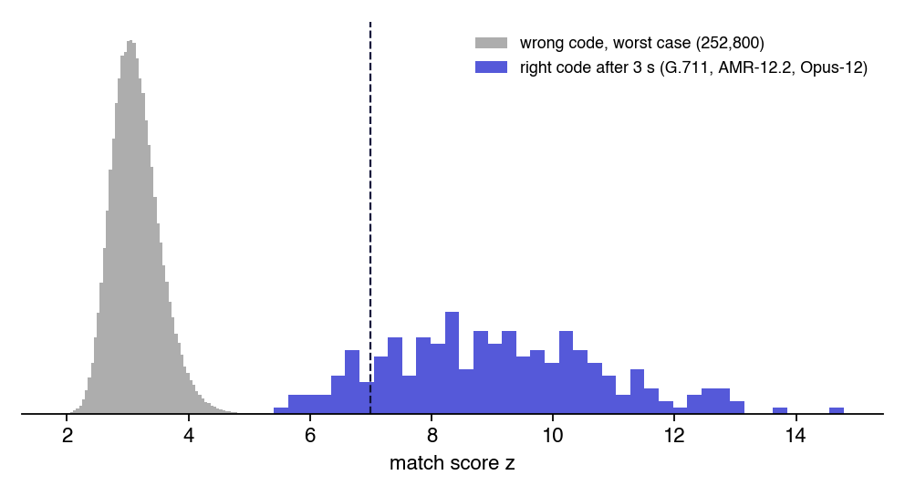
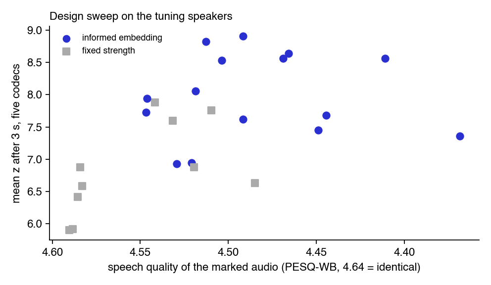

AI voice agents now place phone calls on behalf of people, and nothing in a call lets the answering side check who the agent speaks for: caller ID can be spoofed and a voice can be cloned. In Palabra the caller registers a signed call intent before dialling, and the speech of the call carries a near-inaudible mark derived from a per-call secret. The receiver looks the intent up and asks one question of the audio: does it carry this call's code? The mark is therefore a zero-bit watermark, and the answer is a score that grows as the caller talks. The mark adds no signal. It shifts the loudness of 32 ms by 190 Hz tiles of the voice by up to 5 dB in a keyed checkerboard, changing only what speech codecs keep. At a pass mark where the false-alarm probability per wrong code is provably below 1.1 × 10⁻⁷, it was verified within 5 seconds on every held-out recording through AMR 12.2, AMR-WB 12.65 and Opus 12 kbit/s, and within 3 seconds through G.711. The hardest lines (AMR 4.75, Opus 6 kbit/s) needed 5 to 8 seconds and missed 8% of calls. No wrong code passed in more than 400,000 trials. A small neural network in the detector, which never sees the code and so cannot weaken the bound, cuts the median time to verify by about 40%; it runs as the call arrives, uses no audio from the future, and costs 3 ms of processor time per second of audio. On the audio of the live calls it verified 78 of 82 marked greetings with at most 2 seconds of speech, against 56 without it. AudioSeal, a leading neural watermark, fails on most of the same calls below about 8 kbit/s. A streaming detector that never delays the call verified all 82 marked greetings on live calls over the public phone network, 76 of them within 3 seconds, and rejected unmarked greetings, marks registered by another caller and replays. Mean PESQ-WB was 4.44, and four listeners reported no artefacts on more than 50 calls.
A business that answers the phone hears "I'm calling on behalf of your customer" and has two bad options: refuse agent calls and frustrate real customers, or accept them and open a path to account takeover. In the other direction, customers hang up on "this is your bank's assistant" because fraudsters use the same sentence, the same number and now the same synthetic voice.
Existing caller authentication lives in call signalling. STIR/SHAKEN signs the calling number in SIP [1], and its out-of-band variant stores a signed token before the call that the callee fetches by its own number [2]. Rich Call Data adds a display name and a free-text call reason [3]. These are lost on non-SIP hops, say nothing about the media, and RFC 8816 itself notes that an attacker who knows a call is about to happen can race it inside the validity window [2]. Nothing lets the receiving endpoint check, from the audio it actually hears and after arbitrary transcoding, that the speech belongs to a specific registered call.
Palabra adds that check. This paper covers the audio part: the design of the mark, the detector, its false-alarm guarantee, and an evaluation through the codecs a call is likely to cross.
Registration. The person whose agent will call signs in with the business, on the business's own page, and approves what the agent may do. Just before dialling, the agent registers a call intent: caller number, callee number, time slot, the business's customer identifier, the purpose and the limits of authority. The registry derives a one-time code
code = HMAC-SHA256(secret, caller | callee | time slot)
and the agent's speech is marked with it.
Verification. When the call arrives, the receiver looks up intents matching the observed caller ID, its own number and the current time. For each candidate it runs the detector on the incoming audio with that intent's code. A pass releases the intent's fields (who, why, what is allowed) to the receiving agent or person. A code is accepted once.
What the mark proves. That the audio on this line was produced by a party holding this call's code. Combined with the registry, that gives: this is the call that the signed-in customer's agent announced.
Table 1. Attacks considered and their outcome.
| Attack | Outcome |
|---|---|
| Spoofed caller ID, any voice, no code | Fails. Without the code the attacker's audio matches with probability below the false-alarm bound (Section 4.3). |
| Cloned voice of the real agent | Fails for the same reason. The mark is keyed per call, not a property of the voice. |
| Replay of a recorded marked call | Fails once the registration is consumed (Section 6.10). A replay that reaches the receiver before the genuine call is not prevented. |
| Removing the mark | Possible, and harmless: the call is treated as unverified. |
| A valid mark from another caller, or for another destination | Fails. The code binds caller, callee and call (Sections 6.9, 6.10). |
| Relay through an attacker the agent was tricked into calling | Fails. The agent marks its speech for the number it dialled. |
| Takeover of the voice after verification | Detected within about 2 to 3 s if the whole call is marked (Section 6.11). |
| Live relay of the unmodified genuine call by a party on the path | Not prevented, and of limited use: the relayer cannot change what is said without losing the mark. Proof of liveness needs a challenge from the answering side. |
| Compromised agent or leaked code | Not prevented. Whoever holds the code can produce the mark; revocation must be fast. |
A longer survey, with each source tagged by how far it was checked, is in paper/related_work_notes.md in the repository (Section 10). The points that shaped this design:
Closest systems. CallShield authenticates callers with a neural watermark used as a 25 bit/s link, pairwise keys and an HMAC challenge-response; it takes 63 seconds on average and was evaluated against noise, filtering and echo, not codecs [4]. Looney and Gaubitch describe a zero-bit spread-spectrum mark in the log spectrum of 20 ms frames between 500 and 3650 Hz, aimed at flagging synthetic speech in call centres; through Opus at 8 kbit/s their single-frame equal error rate was 30 to 37% and pooling 30 frames was essential [5]. It uses a global key and no registry. Kazemi et al. model the AMR channel as a linear filter plus scaling and reach 3.2 bit/s through AMR 12.2 [6]. We found no system that combines a per-call keyed mark with a registry lookup for agent calls; that statement rests on a limited search and no systematic patent review.
Neural watermarks and speech codecs. In the sources we opened, AudioSeal, WavMark and SilentCipher report robustness to MP3, AAC and Ogg, and none is evaluated through AMR, EVS, G.729 or G.723.1 [7, 8, 9]. Where Opus at speech bitrates has been tested the results are poor: AWARE's VoIP condition (Opus 16 kbit/s with loss) reports bit error rates of 0.48 for AudioSeal and 0.24 for WavMark [10], and AudioMarkBench finds Opus removes watermarks at acceptable quality [11].
What survives a speech codec. AuthLoop reports that voice codecs preserve neither amplitude nor phase and distort even in-band tones [12]. Low-rate coders transmit a spectral envelope, pitch, gains and a coarse excitation [13]. Schemes built on those parameters survive where additive spread spectrum does not: formant enhancement through G.729 [14], pitch modulation through AMR 5.1 kbit/s [15]. This is why the Palabra mark acts on local loudness ratios at roughly formant scale and adds no signal of its own.
Theory. The embedder knows the host signal, so the host need not act as noise [16, 17]; Furon frames zero-bit watermarking as detection with side information at the embedder [18]. Sequential detection reaches decisions sooner than a fixed-length test [19].
In-band data. Audible modems reach 500 bit/s through AMR [12]. Inaudible marks through CELP-class codecs run at a few bits per second or less [6, 14, 15]. A zero-bit design sidesteps bit rate: the registry carries the data and the audio carries only proof.
Audio is analysed at 16 kHz with a 32 ms Hann window and an 8 ms hop. The band from 406 to 3406 Hz, which a narrowband phone line carries, is divided into 16 bands of 187.5 Hz, and time into tiles of 32 ms. Let L(t, k) be the log energy in dB of tile t, band k. Tiles are grouped into 2 × 2 blocks, and each block gives one vote:
f = L(t, k) − L(t, k+1) − L(t+1, k) + L(t+1, k+1)
This mixed difference cancels both the overall level change between consecutive tiles and the spectral tilt between neighbouring bands, leaving the part of the voice that is hard to predict. A block spans 64 ms and 375 Hz, so there are 8 votes per 64 ms, or 125 per second before silent tiles are discarded.
The per-call code expands, through SHA-256 in counter mode, into one sign s ∈ {+1, −1} per vote. The mark makes each vote lean the way its sign says.
A fixed-strength mark pushes the four tiles of every block by ±g dB. That wastes change on blocks where the voice already leans the right way and falls short on blocks where it leans strongly the wrong way. The Palabra embedder measures each vote on the clean speech and changes a block only as far as needed for s·f to reach a margin m, with the per-tile change capped at g_max:
g ← clip( g + (m − s·f) / 4, 0, g_max ), repeated 4 times
The tile gains are smoothed over 3 frames and 3 bins and applied to the short-time spectrum. Nothing is added to the signal; only the local loudness balance changes. The frozen settings are m = 10 dB and g_max = 5 dB. Figure 1 shows the result on a short stretch of speech.

Figure 1. One and a half seconds of speech (top) and the change the mark makes to it (bottom). Dashed lines bound the marked band. Tiles are changed by different amounts, and silent ones not at all.
The detector does not have the original speech. For a candidate start time it computes all votes, discards blocks containing a tile more than 50 dB below the loudest, standardises the votes, clips them at ±2.5 standard deviations and forms
z(T) = Σ sᵢ vᵢ / sqrt( Σ vᵢ² )
over the votes heard up to time T. It repeats this for 150 candidate start times (0 to 1.2 s in 8 ms steps) and takes the maximum. z is re-evaluated as more speech arrives, and the call passes the first time z reaches the pass mark τ.
For a code the audio was not marked with, the signs sᵢ are independent of the votes vᵢ. The sum is then a weighted sum of independent ±1 variables, and Hoeffding's inequality gives P(z ≥ τ) ≤ exp(−τ²/2) for one start time and one decision time, whatever the audio is. With 150 start times and decisions every 0.25 s from 0.5 to 8 s (31 decision times), a union bound gives
P(false alarm per wrong code) ≤ 4650 · exp(−τ²/2) = 1.1 × 10⁻⁷ at τ = 7.
This holds for adversarially chosen audio, provided the attacker cannot predict the sign pattern, which rests on the HMAC secret. We use τ = 7 throughout.
On a laptop CPU, embedding 7.7 s of speech takes 0.03 s, preparing the detector takes 0.02 s, and scoring one candidate code takes 0.24 ms. The embedder and the whole-file detector are about 170 lines of Python using NumPy and SciPy.
Speech. Human speech is from the mini LibriSpeech dev-clean-2 set: read audiobook recordings at 16 kHz. Speakers with utterances of at least about 8.5 s were split once into 13 tuning speakers and 13 held-out speakers. All design choices in Section 7 used tuning speakers only. The reported results use the 65 qualifying utterances of the held-out speakers, truncated to 8 s. A second set has 14 synthetic agent greetings of 4 to 8 s, generated with ElevenLabs Multilingual v2 (8 voices) and Gemini 3.8 Flash TTS (6 voices) in English, Spanish and Hinglish; these were not used for tuning.
Phone lines. Each marked recording is band-limited to 300 to 3400 Hz, resampled to 8 kHz, encoded and decoded with a real codec implementation, and returned to the detector. Codecs: G.711 μ-law, G.726 at 32 kbit/s, AMR-NB at 12.2, 7.95, 5.9 and 4.75 kbit/s (OpenCORE), Opus in VoIP mode at 24, 16, 12, 8 and 6 kbit/s (libopus), iLBC at 15.2 kbit/s, and G.723.1 at 6.3 kbit/s. Two tandems model multi-hop calls: AMR 12.2 then G.711 then Opus 16, and G.711 then AMR 7.95 with white noise added at 20 dB SNR. Section 6.12 adds the wideband codecs of 4G voice, AMR-WB and EVS, on lines that keep 50 to 7000 Hz at 16 kHz.
Measures. For each call and line we record z as a function of speech heard, and the time at which it first reaches τ = 7. For false alarms, every received recording on every line is scored against 200 random wrong codes, taking the worst case over start times and all listening times from 1 s. Recordings that were never marked are scored against the right code on three lines. Speech quality of the marked audio against the original is measured with wideband PESQ. With 65 recordings, the 95% interval around a reported share is at most 12 points either way; Section 8 gives the bound for a reported 100%.

Figure 2. Match score against seconds of speech heard. Lines are medians; bands are quartiles.
Table 2. Human speech, 65 held-out recordings. Share of calls verified by a given time, at τ = 7.
| Line | 1 s | 2 s | 3 s | 5 s | 8 s | Median time to verify |
|---|---|---|---|---|---|---|
| No codec | 31% | 82% | 100% | 100% | 100% | 1.50 s |
| G.711 | 31% | 82% | 100% | 100% | 100% | 1.50 s |
| G.726 32k | 29% | 82% | 97% | 100% | 100% | 1.50 s |
| Opus 24k | 25% | 78% | 95% | 100% | 100% | 1.75 s |
| Opus 16k | 20% | 65% | 89% | 100% | 100% | 1.75 s |
| Opus 12k | 9% | 51% | 78% | 100% | 100% | 2.00 s |
| iLBC 15.2k | 5% | 46% | 88% | 100% | 100% | 2.25 s |
| AMR 12.2k | 5% | 43% | 80% | 100% | 100% | 2.50 s |
| AMR 12.2 → G.711 → Opus 16 | 0% | 25% | 57% | 98% | 100% | 2.75 s |
| AMR 7.95k | 0% | 20% | 52% | 97% | 100% | 3.00 s |
| G.711 → AMR 7.95 + noise | 0% | 15% | 55% | 95% | 100% | 3.00 s |
| Opus 8k | 0% | 17% | 48% | 94% | 100% | 3.25 s |
| G.723.1 6.3k | 0% | 8% | 37% | 88% | 100% | 3.50 s |
| AMR 5.9k | 0% | 5% | 29% | 75% | 100% | 3.75 s |
| AMR 4.75k | 0% | 0% | 8% | 51% | 92% | 4.88 s |
| Opus 6k | 0% | 0% | 2% | 45% | 92% | 5.25 s |
Table 3. Synthetic agent voices, 14 recordings of 4 to 8 s.
| Line | 1 s | 2 s | 3 s | 5 s | End | Median time to verify |
|---|---|---|---|---|---|---|
| G.711 | 36% | 93% | 100% | 100% | 100% | 1.25 s |
| Opus 16k | 29% | 86% | 100% | 100% | 100% | 1.38 s |
| Opus 12k | 0% | 64% | 93% | 100% | 100% | 1.62 s |
| AMR 12.2k | 0% | 57% | 93% | 100% | 100% | 1.88 s |
| AMR 12.2 → G.711 → Opus 16 | 0% | 36% | 71% | 100% | 100% | 2.38 s |
| AMR 7.95k | 0% | 21% | 64% | 100% | 100% | 2.75 s |
| Opus 8k | 0% | 21% | 64% | 100% | 100% | 2.88 s |
| G.723.1 6.3k | 0% | 14% | 57% | 86% | 100% | 3.00 s |
| AMR 5.9k | 0% | 7% | 21% | 79% | 93% | 3.75 s |
| AMR 4.75k | 0% | 0% | 0% | 36% | 64% | 5.00 s |
| Opus 6k | 0% | 0% | 14% | 50% | 57% | 4.38 s |
With 14 recordings each percentage step is 7 points, and several of these greetings end before 6 s, which is why the hardest lines do not reach 100%.
Three patterns hold across both sets. Listening longer works: the score grows roughly with the square root of the speech heard, so every line that fails at 2 s improves at 5 s. Landline-grade and mid-rate codecs behave almost like no codec at all. The codecs below about 6 kbit/s are the limit: they still pass most calls, but only after 5 to 8 s.

Figure 3. Share of human-speech calls verified by time, on the lines of Table 2.
In 252,800 wrong-code trials the highest score was 5.83, against a pass mark of 7. Six trials reached 5.5 and none reached 6. Unmarked audio scored against the right code peaked at 4.33 in 237 trials. The wrong-code scores average 3.14, not 0, because each is a maximum over 150 start times and all listening times; this is the reason the pass mark is set from the bound in Section 4.3 and not from a normal approximation. An earlier pass mark of 6 would have looked safe under a normal fit and was not: the observed tail is far heavier than that fit predicts.

Figure 4. Scores for wrong codes (worst case) and for the right code after 3 s.
Mean PESQ-WB of the marked speech against the original was 4.44 for human speech (minimum 4.24) and 4.44 for agent voices (minimum 4.33), where 4.64 is the score of identical signals. Published watermark work treats PESQ above about 4.0 to 4.2 as imperceptible [4, 8, 20]. The signal-to-change ratio is 12.5 dB, which would be clearly audible for additive noise; here the change is a loudness reshaping of the voice itself. PESQ was withdrawn by the ITU in 2024 in favour of POLQA [21], and no objective metric substitutes for listening.
Listening. Four listeners heard more than 50 marked calls between them and reported no glitches or other artefacts. This was an informal check and not a blind comparison, so it shows that the mark does not disturb a call, not how often a trained listener could tell a marked call from an unmarked one. Sample pairs are in paper/audio/ in the repository.
The first proof of concept used fixed ±2 dB changes on pairs of neighbouring bands. On the same held-out recordings and pass mark:
Table 4. Share verified within 3 s / 5 s.
| Line | First proof of concept | Final engine |
|---|---|---|
| G.711 | 17% / 54% | 100% / 100% |
| AMR 12.2k | 2% / 6% | 80% / 100% |
| Opus 12k | 0% / 9% | 78% / 100% |
| G.723.1 6.3k | 0% / 0% | 37% / 88% |
| AMR 4.75k | 0% / 0% | 8% / 51% |
The first version scored PESQ-WB 4.62 and the final one 4.44: the gain in robustness was bought partly with a stronger mark.
We ran AudioSeal [7], a widely used open neural watermark, on the same 79 recordings and lines. AudioSeal is not keyed per call and was not trained for telephony, so this is a robustness reference, not a like-for-like alternative. Its detector returns a score per recording; we count a marked recording as detected when it scores above every one of the 79 unmarked recordings on the same line. That criterion tolerates a false-alarm rate of roughly 1 in 79, about five orders of magnitude looser than the Palabra pass mark. It is set separately for 3 s and for 8 s of audio, which is why a share can fall with more audio. Mean PESQ-WB of the AudioSeal mark was 4.40, close to Palabra's 4.44.
Table 5. Share of recordings detected within 3 s / 8 s. AudioSeal at a loose criterion, Palabra at τ = 7.
| Line | AudioSeal | Palabra |
|---|---|---|
| G.711 | 100% / 100% | 100% / 100% |
| Opus 16k | 99% / 100% | 91% / 100% |
| AMR 12.2k | 92% / 94% | 82% / 100% |
| Opus 12k | 87% / 100% | 81% / 100% |
| AMR 7.95k | 37% / 27% | 54% / 100% |
| AMR 12.2 → G.711 → Opus 16 | 27% / 34% | 59% / 100% |
| Opus 8k | 20% / 57% | 51% / 100% |
| G.723.1 6.3k | 3% / 4% | 41% / 100% |
| AMR 4.75k | 1% / 11% | 6% / 87% |
On single good codecs AudioSeal detects slightly sooner at its much looser criterion. Below about 8 kbit/s and across a three-codec tandem it mostly fails and does not recover with more audio, while the Palabra score keeps growing. This matches the published picture that current neural marks are not built for speech-codec channels (Section 3).
The analytic detector computes each vote from four tile energies. We trained a small convolutional network (320,000 parameters) to compute the votes instead, from the received spectrogram of the phone band. It takes the analytic votes as an input and adds a correction, so it starts from the analytic detector and can only be judged against it. The embedder is unchanged.
The network never sees the code. For a wrong code the keyed signs are therefore still independent of the votes, and the false-alarm bound of Section 4.3 holds unchanged, whatever the network has learned. This is the property that makes a learned component acceptable in an authentication check.
Training used 4,002 marked recordings from 1,334 utterances of 28 speakers (mini LibriSpeech train-clean-5, disjoint from both the tuning and the held-out speakers), each sent through a random codec, sometimes two, sometimes with added noise. The loss is the negative match score on random-length prefixes. Training took 7 minutes on a laptop GPU.
Table 6. Held-out human speech (65 recordings), τ = 7. Share verified by 2 s / 3 s / 5 s, and median time to verify.
| Line | Analytic detector | Learned detector |
|---|---|---|
| G.711 | 82% / 100% / 100%, 1.50 s | 97% / 100% / 100%, 1.00 s |
| Opus 12k | 51% / 78% / 100%, 2.00 s | 85% / 100% / 100%, 1.50 s |
| AMR 12.2k | 43% / 80% / 100%, 2.50 s | 83% / 98% / 100%, 1.50 s |
| AMR 12.2 → G.711 → Opus 16 | 25% / 57% / 98%, 2.75 s | 65% / 91% / 100%, 1.75 s |
| AMR 7.95k | 20% / 52% / 97%, 3.00 s | 57% / 89% / 100%, 2.00 s |
| Opus 8k | 17% / 48% / 94%, 3.25 s | 54% / 91% / 100%, 2.00 s |
| G.723.1 6.3k | 8% / 37% / 88%, 3.50 s | 40% / 88% / 100%, 2.25 s |
| AMR 5.9k | 5% / 29% / 75%, 3.75 s | 29% / 77% / 100%, 2.50 s |
| AMR 4.75k | 0% / 8% / 51%, 4.88 s | 11% / 52% / 95%, 3.00 s |
| Opus 6k | 0% / 2% / 45%, 5.25 s | 6% / 25% / 89%, 4.00 s |
The learned detector cuts the median time to verify by 25 to 40% on every line. On the 14 agent voices the pattern is the same: through AMR 12.2 the share verified within 2 s rises from 57% to 93%, and through the three-codec tandem from 36% to 93%. In 158,000 wrong-code trials on these recordings the highest score was 5.79 for the learned detector and 5.23 for the analytic one; none reached 6.
Two things limit this first network. It scores a prefix of the call with votes computed from the whole recording, and its filters reach 0.2 s past the last row scored, so the times in Table 6 are up to 0.2 s shorter than a live detector could achieve. And it is run once for each of the 150 candidate starts, which costs about 3 s of processor time per second of audio on one core. Section 6.13 removes both limits. The learned detectors are research results in research/ and are not yet part of the packaged engine.
Sections 6.1 to 6.6 use studio speech. To see whether audio that has already crossed a phone network behaves differently, we took 60 recordings from each of two open collections: the agent side of the Gridspace-Stanford Harper Valley corpus (8 kHz call-centre calls, CC-BY-4.0) [22] and the NCSU Robocall Audio Dataset (calls captured by telephone honeypots and voicemail) [23]. From each recording we took the 8 seconds with the most speech, starting where the talker starts, marked them, and sent them through the bridge again. The analytic detector and the pass mark of 7 are unchanged.
Table 7. Real call recordings, marked and sent through a second line. Verified within 3 s / 5 s, and median time.
| Line | Harper Valley (60) | Robocalls (60) |
|---|---|---|
| G.711 | 95% / 97%, 1.5 s | 100% / 100%, 0.7 s |
| AMR 12.2k | 87% / 97%, 1.8 s | 92% / 100%, 1.3 s |
| Opus 12k | 88% / 97%, 1.9 s | 97% / 100%, 1.1 s |
| AMR 12.2k > G.711 > Opus 16k | 78% / 93%, 2.1 s | 88% / 100%, 1.6 s |
| AMR 4.75k | 23% / 63%, 4.4 s | 32% / 78%, 3.8 s |
Results are at least as good as on studio speech. In 60,000 wrong-code trials the highest score was 5.44. Choosing the busiest 8 seconds favours the mark compared with an arbitrary greeting. A first run that did not start each clip at the talker failed on half of the Harper Valley clips on every line, because the whole-file detector searches only the first 1.2 s for the start of the mark. That motivated the streaming detector below.
A receiver cannot wait for a file. engine/palabra_mark/stream.py is a detector that reads a copy of the call audio frame by frame and never delays the call. It works on 8 kHz audio directly (a 256-point transform gives the same 31.25 Hz bins as 512 points at 16 kHz), keeps one running score for every possible start of the mark in the first 10 seconds of the call, and checks each score every 0.256 s of mark heard. Votes are standardised with running statistics instead of whole-file statistics. With 1,250 starts and 30 checks per start the union bound of Section 4.3 gives a false-alarm probability below 8.6 × 10⁻⁷ per wrong code at the pass mark of 7.
On the 120 recordings of Section 6.7, fed as 20 ms frames at 8 kHz with 0.3 to 6 s of line noise before the greeting, the streaming detector matched the whole-file detector that had been told where the greeting starts (Table 8). It used 2.4 ms of processor time per second of audio in Python on one core.
Table 8. Streaming detector on real call recordings. Verified within 3 s / 5 s, and median time from the start of the greeting.
| Line | Streaming | Whole-file, start known |
|---|---|---|
| G.711 | 97% / 99%, 1.0 s | 98% / 99%, 0.9 s |
| AMR 12.2k | 87% / 99%, 1.5 s | 87% / 98%, 1.7 s |
| Opus 12k | 89% / 99%, 1.3 s | 88% / 98%, 1.5 s |
| AMR 12.2k > G.711 > Opus 16k | 82% / 98%, 2.0 s | 76% / 97%, 2.1 s |
| AMR 4.75k | 20% / 69%, 4.1 s | 22% / 67%, 4.3 s |
In 60,000 wrong-code trials the highest streaming score was 6.07.
We then placed real calls. A Twilio number in the United States dialled a LiveKit number over the public phone network and played a greeting; a LiveKit agent copied the caller's audio to the streaming detector as 8 kHz frames (demo/). The carrier chose the codecs and the path. Each call was registered first, and the detector ran live with the pass mark of 7. The greetings were the 14 agent voices (twice each, with different codes) and 20 held-out human recordings.
Table 9. Live calls over the public phone network.
| Calls | Number | Outcome |
|---|---|---|
| Marked greeting, agent voices | 28 | 28 verified; 27 within 3 s; median 1.2 s |
| Marked greeting, human recordings | 20 | 20 verified; 17 within 3 s, 19 within 5 s; median 1.4 s |
| Unmarked greeting on a registered call | 8 | 0 verified; highest score 4.33 |
| Valid mark registered by a different caller | 4 | 0 verified; highest score 3.59 |
| Marked greeting, then the same recording played on a second call | 3 | first call verified, second rejected (registration consumed) |
Times are from the start of speech in the received audio. In 13,200 wrong-code trials on the 66 recordings the highest score was 5.34. Before this batch, eight single test calls had been placed while building the service: seven verified and one did not.
Tap at the trunk. In a second batch the roles were reversed, as they would be for an agent hosted on LiveKit calling a business hosted on Twilio: the LiveKit side spoke the marked greeting into the call, and Twilio streamed the audio it received straight to the detector (Media Streams: 20 ms μ-law frames with timestamps, no playback buffer at the receiver). All 34 marked greetings were verified (14 agent voices, median 1.0 s; 20 human recordings, median 1.6 s; 32 within 3 s), and none of 4 unmarked greetings (highest score 3.93). In 7,600 wrong-code trials the highest score was 5.42.
Timing slips. The call that failed showed something the simulated lines never do. Matching quarter-second pieces of the audio sent against the audio received shows the delay of the line changing during a call, presumably as jitter buffers adapt. In the first batch 31 of 48 marked greetings showed at least one step of more than 4 ms, and in the second 16 of 34; a call with any step had two or three, with a median size of about 10 ms and a 90th percentile of 34 to 44 ms. Tapping at the trunk therefore halves how often slips occur but does not remove them; in both set-ups one leg of the path is WebRTC. The detector rides out the small steps, since a tile is 32 ms long. On the failed call the delay grew by about 125 ms over one second, and the score stalled at 4.0.
A slip-tolerant scorer (SlipScorer) restarts the count every 0.5 s and can carry a score across one shift of up to 120 ms. It tries 8.2 million alignments per code instead of 37,500, so it needs a pass mark of 7.75 for a bound of 7.4 × 10⁻⁷. Run beside the plain scorer, with a call passing when either does (DualScorer, bounds add to 1.6 × 10⁻⁶), it keeps the plain scorer's speed on ordinary calls and recovers some slipped ones: within 3 s it verified 47 of 48 in the first batch (plain: 44) and 33 of 34 in the second (plain: 32), with medians unchanged. Its highest wrong-code score across both batches, on the plain scorer's scale, was 5.74. It raised the failed call to 6.6 on the slip scale, still short of 7.75. A gradual stretch needs a scorer that follows more than one shift, at the price of a higher pass mark; that remains open.
Joining late. If the detector misses the first part of the mark, the plain design fails, because it assumes the first thing it hears is the start of the pattern: with the first 0.5 s removed, 0 of 12 simulated G.711 calls verified. Letting the detector also assume that up to 4 s of the mark had already gone by restored 12 of 12 with 0.5, 1 and 2 s removed, and raises the bound from 8.6 × 10⁻⁷ to 1.2 × 10⁻⁶.
The code binds caller, callee and call. We played four cases into the demo service through a simulated AMR 12.2 line (demo/test_cross.py).
Table 10. Marks made for other calls, through a simulated AMR 12.2 line.
| Case | Result |
|---|---|
| A valid mark registered by another caller, sent with the victim's caller ID | Not verified (score 3.2) |
| The victim's own mark, registered for a different destination | Not verified (score 4.4) |
| The genuine call | Verified (7.2) |
| A recording of the genuine greeting, played again afterwards | Rejected: the registration had been consumed |
The last case passed on the first run, because the service kept a registration valid for five minutes. Registrations are now consumed on first verification. The second case is what defeats the simplest relay: an agent tricked into calling an attacker marks its speech for the attacker's number, and that audio is useless at any other destination.
Marking only the greeting leaves the rest of the call unprotected: an attacker on the path could let the greeting through and then replace the voice. If the agent's speech is marked for the whole call, the detector can keep checking. Once a call is verified the alignment is known, so only one score per window needs testing and a low threshold suffices.
We marked the 65 held-out recordings in full (honest call) and for the first 4 seconds only, with the same voice continuing unmarked (a takeover by a perfect voice clone with no click or gap). After locking alignment in the first 3 seconds, the detector scored every 3-second window and raised an alarm when one fell below 3.
Table 11. Takeover detection with whole-call marking (calls that verified within 3 s).
| Line | Honest calls with a false alarm | Takeovers caught | Median delay | Worst delay |
|---|---|---|---|---|
| G.711 | 0 of 62 | 64 of 64 | 2.3 s | 2.7 s |
| AMR 12.2k | 0 of 43 | 47 of 47 | 2.1 s | 2.7 s |
| Opus 12k | 0 of 46 | 46 of 46 | 2.0 s | 2.9 s |
With 2-second windows the median delay falls to 1.2 to 1.4 s, at the cost of a false alarm on 2 to 9% of honest calls. These clips are 8 seconds long and the lines are simulated; pauses in speech and the timing slips of Section 6.9 are not covered, and a deployed check would need to handle both.
Most 4G calls between mobile phones use AMR-WB or EVS, which carry 50 to 7000 Hz. The mark lives between 406 and 3406 Hz, inside what these codecs carry, so we sent the same marked recordings through them with nothing changed: same embedder, same analytic detector, same pass mark. The line keeps 50 to 7000 Hz at 16 kHz. AMR-WB is encoded with the VisualOn encoder at 23.85, 12.65, 8.85 and 6.6 kbit/s, and EVS with the 3GPP floating-point reference codec (TS 26.443) in wideband mode at 24.4, 13.2, 9.6, 7.2 and 5.9 kbit/s; the 5.9 mode is variable-rate and runs with discontinuous transmission. AMR-WB 12.65 and EVS 13.2 are the rates networks commonly use. Two tandems model a wideband mobile leg that is transcoded on the way: EVS 13.2 then G.711 then Opus 16, and AMR-WB 12.65 then G.711 then AMR 12.2.
Table 12. Wideband mobile codecs, 65 held-out human recordings, τ = 7.
| Line | 1 s | 2 s | 3 s | 5 s | 8 s | Median time to verify |
|---|---|---|---|---|---|---|
| AMR-WB 23.85k | 22% | 72% | 95% | 100% | 100% | 1.50 s |
| EVS 24.4k | 18% | 66% | 94% | 100% | 100% | 1.75 s |
| AMR-WB 12.65k | 5% | 48% | 82% | 100% | 100% | 2.25 s |
| EVS 13.2k | 0% | 25% | 69% | 98% | 100% | 2.75 s |
| AMR-WB 8.85k | 0% | 17% | 51% | 92% | 100% | 3.00 s |
| AMR-WB 12.65 → G.711 → AMR 12.2 | 0% | 14% | 51% | 92% | 100% | 3.00 s |
| EVS 9.6k | 0% | 12% | 38% | 94% | 100% | 3.50 s |
| EVS 13.2 → G.711 → Opus 16 | 0% | 15% | 40% | 91% | 100% | 3.50 s |
| EVS 7.2k | 0% | 6% | 22% | 72% | 98% | 4.00 s |
| AMR-WB 6.6k | 0% | 2% | 8% | 65% | 100% | 4.50 s |
| EVS 5.9k | 0% | 5% | 14% | 66% | 100% | 4.50 s |
The wideband codecs behave like their narrowband relatives at similar rates. AMR-WB 12.65 matches AMR 12.2 (82% against 80% within 3 s, both 100% within 5 s), and every recording was verified within 8 s on every line except one recording on EVS 7.2. EVS is somewhat harder than AMR-WB at the same rate, which fits a codec that spends its bits more on perceived quality than on the fine shape of the spectrum. On the 14 agent voices the two common rates gave 86% (AMR-WB 12.65) and 71% (EVS 13.2) within 3 s and 100% within 5 s; at 7.2 kbit/s and below, 71 to 79% of these short greetings verified before they ended. In 173,800 wrong-code trials on these lines the highest score was 5.72, and unmarked audio scored against the right code peaked at 4.54 in 158 trials.
Neither detector was tuned or trained on these codecs. The learned detector of Section 6.6, whose training saw only narrowband codecs, was run on the same lines as it is.
Table 13. Wideband mobile codecs, analytic against learned detector. 65 held-out human recordings, τ = 7. Share verified by 2 s / 3 s / 5 s, and median time to verify.
| Line | Analytic detector | Learned detector |
|---|---|---|
| AMR-WB 23.85k | 72% / 95% / 100%, 1.50 s | 95% / 100% / 100%, 1.25 s |
| EVS 24.4k | 66% / 94% / 100%, 1.75 s | 95% / 100% / 100%, 1.25 s |
| AMR-WB 12.65k | 48% / 82% / 100%, 2.25 s | 85% / 100% / 100%, 1.50 s |
| EVS 13.2k | 25% / 69% / 98%, 2.75 s | 77% / 98% / 100%, 1.75 s |
| AMR-WB 8.85k | 17% / 51% / 92%, 3.00 s | 52% / 91% / 100%, 2.00 s |
| AMR-WB 12.65 → G.711 → AMR 12.2 | 14% / 51% / 92%, 3.00 s | 54% / 88% / 100%, 2.00 s |
| EVS 9.6k | 12% / 38% / 94%, 3.50 s | 45% / 95% / 100%, 2.25 s |
| EVS 13.2 → G.711 → Opus 16 | 15% / 40% / 91%, 3.50 s | 49% / 92% / 100%, 2.25 s |
| EVS 7.2k | 6% / 22% / 72%, 4.00 s | 29% / 74% / 100%, 2.50 s |
| AMR-WB 6.6k | 2% / 8% / 65%, 4.50 s | 15% / 57% / 94%, 3.00 s |
| EVS 5.9k | 5% / 14% / 66%, 4.50 s | 12% / 62% / 97%, 3.00 s |
The gain carries over to codecs the network has never seen. At the two common rates, AMR-WB 12.65 and EVS 13.2, the learned detector verified 100% and 98% of recordings within 3 s, and the median time to verify fell by 29 to 38% on every line except AMR-WB 23.85, which was already fast (17%). Every recording was verified within 8 s on every line. The 14 agent voices show the same pattern: all were verified within 3 s through both common rates, and within 5 s on every line. In 173,800 wrong-code trials the highest score for the learned detector was 6.20, the only one to reach 6, and none reached 7. The times for the learned detector carry the same 0.2 s of look-ahead as those of Table 6.
The network of Section 6.6 cannot run on a live call as it stands: it looks ahead, and it is far too slow. We redesigned it to run as the audio arrives, and trained it on more speakers and on the wideband codecs.
Causal, one pass. Every convolution reaches only backwards in time, and normalisation is computed separately at each time step, so an output never depends on later audio. The inputs are causal too: the spectrum is measured against the loudest frame heard so far, and the analytic votes are standardised with running statistics, as in the streaming detector of Section 6.8. The network steps through the call every 16 ms and at each step emits the eight votes of the 64 ms row that ended a fixed look-ahead earlier. That look-ahead (0, 64 or 128 ms) is counted in every time reported below. Because the output is dense in time, one pass serves every candidate start: the votes for a start are read from the steps where its rows end. A second pass, offset by 8 ms, covers the starts in between. The network still never sees the code, so the bound of Section 4.3 holds as before, with at most the same 150 starts and the same decision times.
More speakers, more lines. Training used 79,887 marked recordings of 251 speakers (LibriSpeech train-clean-100, which shares no speaker with the tuning or held-out sets), each sent through one to three codecs drawn from the narrowband and wideband sets, 42% of them through a wideband codec. An earlier network trained on 28 speakers began to memorise them after eight passes over the data; with 251 speakers the score on validation speakers held level to the end of training. The smallest network trained in 23 minutes on one rented GPU.
Table 14. Streaming detectors on 65 held-out human recordings, τ = 7. Share verified by 2 s / 3 s / 5 s, and median time to verify. All times include the network's look-ahead of 64 ms.
| Line | Analytic, running statistics | Small network (59,000 parameters), one pass | Medium network (317,000 parameters), two passes |
|---|---|---|---|
| G.711 | 86% / 100% / 100%, 1.25 s | 98% / 100% / 100%, 1.00 s | 98% / 100% / 100%, 1.00 s |
| Opus 12k | 55% / 88% / 100%, 2.00 s | 95% / 100% / 100%, 1.25 s | 98% / 100% / 100%, 1.25 s |
| AMR 12.2k | 52% / 89% / 100%, 2.00 s | 97% / 100% / 100%, 1.25 s | 97% / 100% / 100%, 1.25 s |
| AMR 12.2 → G.711 → Opus 16 | 34% / 74% / 97%, 2.50 s | 83% / 98% / 100%, 1.50 s | 88% / 100% / 100%, 1.50 s |
| AMR 7.95k | 22% / 66% / 95%, 2.75 s | 77% / 95% / 100%, 1.75 s | 82% / 98% / 100%, 1.50 s |
| Opus 8k | 18% / 54% / 92%, 3.00 s | 66% / 95% / 100%, 1.75 s | 75% / 98% / 100%, 1.75 s |
| G.723.1 6.3k | 9% / 45% / 92%, 3.25 s | 65% / 94% / 100%, 2.00 s | 74% / 94% / 100%, 1.75 s |
| AMR 5.9k | 6% / 38% / 86%, 3.50 s | 54% / 91% / 100%, 2.00 s | 63% / 91% / 100%, 1.75 s |
| AMR 4.75k | 0% / 9% / 54%, 4.75 s | 29% / 77% / 98%, 2.50 s | 45% / 86% / 98%, 2.25 s |
| Opus 6k | 0% / 2% / 45%, 5.00 s | 11% / 52% / 92%, 3.00 s | 23% / 62% / 98%, 2.75 s |
| AMR-WB 23.85k | 80% / 91% / 100%, 1.50 s | 98% / 100% / 100%, 1.25 s | 98% / 100% / 100%, 1.00 s |
| EVS 24.4k | 78% / 92% / 100%, 1.75 s | 98% / 100% / 100%, 1.25 s | 98% / 100% / 100%, 1.00 s |
| AMR-WB 12.65k | 55% / 91% / 100%, 2.00 s | 95% / 100% / 100%, 1.25 s | 95% / 100% / 100%, 1.25 s |
| EVS 13.2k | 35% / 78% / 98%, 2.50 s | 89% / 100% / 100%, 1.50 s | 97% / 100% / 100%, 1.25 s |
| AMR-WB 8.85k | 20% / 55% / 94%, 3.00 s | 74% / 97% / 100%, 1.75 s | 88% / 97% / 100%, 1.50 s |
| AMR-WB 12.65 → G.711 → AMR 12.2 | 23% / 63% / 94%, 2.75 s | 74% / 94% / 100%, 1.75 s | 82% / 98% / 100%, 1.50 s |
| EVS 9.6k | 12% / 52% / 95%, 3.00 s | 69% / 100% / 100%, 1.75 s | 75% / 100% / 100%, 1.50 s |
| EVS 13.2 → G.711 → Opus 16 | 17% / 49% / 91%, 3.25 s | 74% / 98% / 100%, 1.75 s | 85% / 98% / 100%, 1.50 s |
| EVS 7.2k | 6% / 20% / 75%, 3.75 s | 54% / 86% / 100%, 2.00 s | 65% / 91% / 100%, 2.00 s |
| AMR-WB 6.6k | 5% / 18% / 68%, 4.25 s | 38% / 78% / 100%, 2.25 s | 48% / 86% / 100%, 2.25 s |
| EVS 5.9k | 5% / 15% / 62%, 4.50 s | 29% / 74% / 100%, 2.50 s | 43% / 89% / 100%, 2.25 s |
The analytic column is the same search on the analytic votes alone, at every 8 ms start. With running statistics it verifies somewhat sooner than the whole-file analytic detector of Tables 6 and 13 (AMR 12.2: 89% against 80% within 3 s), so it is the stricter baseline.
Every one of the 1,365 recording and line pairs was verified within 8 s by every network, where the analytic search missed 19. Averaged over the 21 lines the median time to verify fell from 2.96 s to 1.76 s with the small network (41%) and to 1.61 s with the medium one (46%). On the common mobile and VoIP rates (AMR 12.2, AMR-WB 12.65, EVS 13.2, Opus 12) the small network verified 89 to 97% of recordings within 2 s and all of them within 3 s. Honest timing cost nothing: through AMR 12.2 the small causal network verified 97% within 2 s, against 83% for the network of Section 6.6 with its 0.2 s of look-ahead. On the 14 agent voices the small network verified 96% of recordings within 3 s on average over the lines and all within 5 s (analytic: 60% and 87%).
Table 15. Size, look-ahead and passes. Mean over the 21 lines of Table 14 of the share of human recordings verified by 2 s / 3 s / 5 s, and processor time on one laptop core per second of audio.
| Detector | Parameters | Look-ahead | One pass | Two passes | Time per pass |
|---|---|---|---|---|---|
| Analytic | none | 0 | 23% / 49% / 82% | 30% / 57% / 88% | |
| Small | 59,000 | 64 ms | 70% / 92% / 99.6% | 73% / 94% / 99.8% | 3.1 ms |
| Medium | 317,000 | 0 | 73% / 93% / 99.9% | 76% / 95% / 99.9% | 7.8 ms |
| Medium | 317,000 | 64 ms | 74% / 93% / 99.9% | 77% / 95% / 99.9% | 7.8 ms |
| Medium | 317,000 | 128 ms | 71% / 93% / 99.7% | 74% / 94% / 99.7% | 7.8 ms |
| Large | 1,600,000 | 64 ms | 75% / 94% / 99.9% | 78% / 95% / 99.9% | 21 ms |
Three things follow. Size matters little: the large network has 27 times the parameters of the small one and verifies 5 points more recordings within 2 s. Look-ahead does not pay: the network with none matches the one that waits 64 ms, and waiting 128 ms is worse, because the wait is counted. And the second pass adds about 3 points at 2 s for twice the cost. The small network in one pass uses 3.1 ms of processor time per second of audio, against about 3 s for the network of Section 6.6 run at 150 starts, a thousand times less, and about the same as the analytic streaming detector of Section 6.8.
In 331,800 wrong-code trials per configuration, the highest score was 5.54 for the small network in one pass and 5.59 for the medium one in two; over all ten configurations of Table 15 one trial reached 6 (6.03, large network) and none reached 7.
On the live calls. Tables 14 and 15 are on files sent through software codecs, with starts searched in the first 1.2 s. We therefore ran the small network, in one pass, as a tap would run it, on the audio the detector received during the 104 live calls of Section 6.9: frame by frame at 8 kHz, with the streaming scorer of Section 6.8, every start in the first 10 s, and the pass mark of 7. The network was not trained on any audio from a phone network.
Table 16. The audio of the live calls of Section 6.9, scored with the analytic votes and with the small network. Speech heard is the length of mark the scorer needed.
| Analytic votes | Small network | |
|---|---|---|
| Marked greetings verified (82) | 82 | 82 |
| Verified with at most 2 s of speech heard | 56 | 78 |
| Verified with at most 3 s of speech heard | 74 | 81 |
| Median speech heard | 1.54 s | 1.28 s |
| Most speech any call needed | 7.2 s | 4.1 s |
| Unmarked greetings verified (12) | 0; highest score 4.33 | 0; highest score 4.24 |
| Marks registered by another caller verified (4) | 0; highest score 3.59 | 0; highest score 4.18 |
| Highest score in 20,800 wrong-code trials | 5.42 | 5.99 |
The gain seen on simulated lines holds on real ones. Counting the 64 ms the network waits, 71 of the 82 marked calls verified sooner than with the analytic votes, by a median of 0.45 s over all 82, and the other 11 verified up to 64 ms later: these are calls that already passed at the first or second check, where better votes cannot help and the wait is all that shows. The six replayed recordings carry a genuine mark and pass with either detector; it is the single use of a registration that rejects them (Section 6.9).
The network was then ported to the verification service (59,066 weights and about 100 lines of TypeScript with no dependencies), where it replaces the analytic votes. Its votes agree with the PyTorch model to within 0.00002, it runs once per call however many registrations the call is checked against, and it uses about 40 ms of processor time per second of audio in JavaScript. This test replays what the live calls delivered; new calls placed with the network in the loop are the next step.
All of this was decided on the tuning speakers.
The score saturates with strength. With fixed-strength marking, raising the change from 2 to 5 dB lifted the 8 s score on G.711 only from 10.0 to 13.2. Once nearly every vote is right, more strength buys nothing and the limit is the number of votes per second. This moved the design towards more, smaller blocks and towards spending change selectively.
Informed embedding beat fixed strength at equal quality. At 32 ms × 190 Hz tiles, a fixed 4 dB mark gave a mean 3 s score of 7.8 over five codecs at PESQ 4.51; informed embedding with a 10 dB margin gave 8.6 at PESQ 4.47 (Figure 5).
Tile shape. Across 48 combinations, 2 × 2 blocks of 32 to 48 ms by 190 Hz were best or near-best on every codec. Votes that compare only consecutive frames were consistently worst. Narrower 125 Hz tiles helped on waveform codecs and hurt on AMR 4.75, consistent with low-rate coders keeping only a coarse envelope.
A linear trained filter did not help; a nonlinear one did. A linear filter over neighbouring tiles, fitted to recover the pattern after eight codecs, converged to nearly the same 2 × 2 difference the votes already compute, and changed scores by a few percent in either direction. The convolutional network of Section 6.6 came afterwards and is where the gain was.

Figure 5. Design sweep on tuning speakers. Further right is more audible change.
The mark already verifies a live call in one to two seconds, with a detector that runs beside the call on one processor core, and it was verified through every codec family we tested, including two wideband ones it was never tuned on. The work ahead builds on that in three directions.
More of the network. Mobile handsets, international routes and lossy networks are next, together with a scorer that follows gradual timing drift and a blind listening test to set the margin. Wideband calls leave 3.4 to 7 kHz unused; a second set of tiles there would add votes per second and shorten the time to verify.
A faster mark. The learned detector cut the time to verify by 40% and more with the embedder untouched, in a causal form cheap enough to run beside every call, and the gain held on the audio of the live calls (Section 6.13). New live calls with the network in the loop come first. Training the embedder with it, with the codecs in the loop [24], and embedding inside the speech generator instead of after it, should give more. For the lowest bitrates a second carrier on pitch [15] can be fused with the first, and an anytime-valid sequential test [19, 25] would lower the pass mark for the same guarantee.
From the greeting to the whole call. Section 6.11 shows that a marked call can be checked continuously. A nonce issued by the answering side when the call connects would turn that into proof of liveness, and telling the calling agent about every verification would expose a code used by anyone else. Looking registrations up by destination and time would cover calls whose caller ID is withheld.
The engine, every experiment script, the result files behind each table and figure, the audio examples and the source of this paper are at https://github.com/sqaas/palabra-mark.
| Path | Contents |
|---|---|
engine/palabra_mark/ |
The mark and both detectors (core.py, stream.py), the phone-line bridge (channels.py) and a command line |
research/ |
One script per experiment; eval_final.py and analyze.py produce Tables 2 to 4 and the figures, and README.md maps every other table to its script |
research/results/ |
The scores behind every table, as JSON, and the weights of the learned detectors |
demo/ |
The verification service, the LiveKit tap and the Twilio caller used for the live calls |
paper/ |
This paper, its figures and the audio examples |
The speech is public: mini LibriSpeech, the Harper Valley corpus [22] and the NCSU robocall dataset [23] are downloaded from their own sites. The synthetic agent greetings are included. Recordings of the live calls are not, but their scores are. The codecs are open implementations: ffmpeg for most, OpenCORE for AMR, and research/setup_codecs.sh builds the AMR-WB encoder and the 3GPP EVS reference codec. A full run of the main evaluation takes a few minutes on a laptop.
[1] J. Peterson, C. Jennings, E. Rescorla, C. Wendt. RFC 8224, "Authenticated Identity Management in the Session Initiation Protocol (SIP)." 2018.
[2] E. Rescorla, J. Peterson. RFC 8816, "STIR Out-of-Band Architecture and Use Cases." 2021.
[3] C. Wendt, J. Peterson. RFC 9795, "PASSporT Extension for Rich Call Data." 2025.
[4] M. Rabhi et al. "CallShield: Secure Caller Authentication over Real-Time Audio Channels." arXiv:2601.09327, 2026.
[5] D. Looney, N. D. Gaubitch. "Robust spread spectrum speech watermarking using linear prediction and deep spectral shaping." Interspeech 2024.
[6] R. Kazemi, F. Pérez-González, M. A. Akhaee, F. Behnia. "Data Hiding Robust to Mobile Communication Vocoders." IEEE Trans. Multimedia, 2016.
[7] R. San Roman et al. "Proactive Detection of Voice Cloning with Localized Watermarking." ICML 2024. arXiv:2401.17264.
[8] G. Chen et al. "WavMark: Watermarking for Audio Generation." arXiv:2308.12770, 2023.
[9] M. K. Singh et al. "SilentCipher: Deep Audio Watermarking." Interspeech 2024. arXiv:2406.03822.
[10] K. Pavlović et al. "AWARE: Audio Watermarking via Adversarial Resistance to Edits." arXiv:2510.17512, 2025.
[11] H. Liu et al. "AudioMarkBench: Benchmarking Robustness of Audio Watermarking." NeurIPS 2024 Datasets and Benchmarks. arXiv:2406.06979.
[12] B. Reaves, L. Blue, P. Traynor. "AuthLoop: End-to-End Cryptographic Authentication for Telephony over Voice Channels." USENIX Security 2016.
[13] J.-M. Valin, K. Vos, T. Terriberry. RFC 6716, "Definition of the Opus Audio Codec." 2012.
[14] S. Wang, M. Unoki. "Watermarking of speech signals based on formant enhancement." EUSIPCO 2014.
[15] D. J. Coumou, G. Sharma. "Watermark synchronization for feature-based embedding: application to speech." ICME 2006.
[16] M. Costa. "Writing on dirty paper." IEEE Trans. Inf. Theory 29(3), 1983.
[17] H. S. Malvar, D. A. F. Florêncio. "Improved spread spectrum: a new modulation technique for robust watermarking." IEEE Trans. Signal Process. 51(4), 2003.
[18] T. Furon. "A constructive and unifying framework for zero-bit watermarking." IEEE TIFS 2(2), 2007.
[19] R. Chandramouli, N. D. Memon. "On sequential watermark detection." IEEE Trans. Signal Process. 51(4), 2003.
[20] N. Gaubitch. "Does Watermarking Protect Against Deepfake Attacks?" Pindrop blog, 2023.
[21] ITU-T P.862 (PESQ), withdrawn 5 January 2024.
[22] M. Wu, J. Nafziger, A. Scodary, A. Maas. "HarperValleyBank: A Domain-Specific Spoken Dialog Corpus." arXiv:2010.13929, 2020.
[23] S. Prasad, B. Reaves. "Robocall Audio from the FTC's Project Point of No Entry." NC State University Technical Report TR-2023-1, 2023.
[24] L. Juvela, X. Wang. "Audio Codec Augmentation for Robust Collaborative Watermarking of Speech Synthesis." arXiv:2409.13382, 2024.
[25] W. Su, R. Wang, Z. Zhao. "Online LLM watermark detection via e-processes." arXiv:2602.14286, 2026.